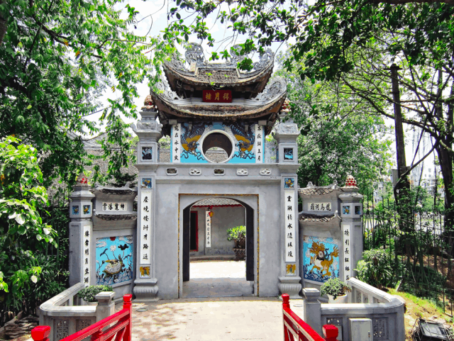

Nếu như đã tới thăm Hà Nội thì Hồ Hoàn Kiếm là một địa điểm mà chắc chắn các bạn không thể bỏ lỡ. Bài viết sau đây sẽ cung cấp cho các bạn những thông tin chi tiết nhất về Hồ Hoàn Kiếm cũng như các địa điểm ăn uống vui chơi ở gần hồ.

Hồ Hoàn Kiếm(Ảnh sưa tầm)
I. Giới thiệu về hồ Hoàn Kiếm/Hồ Gươm
Hồ Hoàn Kiếm nằm ở trung tâm thủ đô, được bao quanh bởi 3 con phố Hàng Khay – Lê Thái Tổ – Đinh Tiên Hoàng. Trước đây hồ còn có một số tên gọi khác như hồ Lục Thủy (hồ nước xanh) hay hồ Thủy Quân (bởi hồ từng là nơi để huấn luyện thủy binh chiến đấu). Đến thế kỉ thứ XV, hồ được đổi tên thành hồ Hoàn Kiếm (trả gươm), gắn liền với sự tích trả gươm báu cho rùa vàng của vua Lê Thái Tổ. Hồ Hoàn Kiếm là nơi tụ hội, điểm hẹn lý tưởng bốn mùa: Rực rỡ trong sắc đào và các lễ hội truyền thống vào mùa xuân; lồng lộng những cơn gió xua tan đi cái nóng oi bức của mùa hè; say đắm với những cành liễu rủ trong màn sương huyền ảo của mùa thu; lộng lẫy trong cơn mưa lá vàng và những giọt mưa phùn lất phất bay của mùa đông.
Hồ Hoàn Kiếm về đêm (ảnh sưu tầm)
II. Di chuyển đến hồ Hoàn Kiếm/Hồ Gươm như thế nào?
Để di chuyển đến hồ Hoàn Kiếm có rất nhiều cách, bạn có thể lựa chọn di chuyển bằng phương tiện cá nhân hoặc các phương tiện công cộng.
Xe bus công cộngCó rất nhiều tuyến xe bus đi qua hồ Hoàn Kiếm, đây cũng là loại phương tiện phù hợp và tiết kiệm với những bạn ở xa khu vực trung tâm phố cổ.
- Điểm dừng bãi đỗ xe bờ hồ: có xe 09, 14
- Điểm dừng Bưu điện thành phố Hà Nội: có xe 08, 09, 31, 36
- Điểm dừng ngã 3 Lê Thái Tổ, Hàng Trống: có xe 09, 31, 36
- Điểm dừng số 15 Đinh Tiên Hoàng: có xe 36
- Điểm dừng ngân hàng nhà nước Việt Nam: có xe 04, 11, 18, 23, 34, 40
- Điểm dừng cung văn hóa thiếu nhi Hà Nội: có xe 04, 08, 11, 18, 23, 40
III. Phương tiện tham quan quanh Hồ Hoàn Kiếm/Hồ Gươm
Để trải nghiệm chuyến du lịch quanh khu hồ Hoàn Kiếm một cách trọn vẹn nhất, các bạn có thể sử dụng một số loại phương tiện sau:
- Xe máy: Là phương tiện nhỏ gọn, rất thích hợp cho những bạn du lịch cá nhân hay theo nhóm muốn tự mình khám phá khu vực hồ Hoàn Kiếm. Có rất nhiều địa điểm cho thuê xe máy ở Hà Nội để bạn lựa chọn.
- Xích lô: Dạo phố bằng xích lô là một gợi ý tuyệt vời giúp du khách có thể thư thái ngắm nhìn cảnh quan xung quanh. Tuy nhiên để tránh tình trạng bị chặt chém, các bạn nên lựa chọn những hãng có tên tuổi, uy tín cũng như thương lượng trước với tài xế về giá cả.
- Xe điện: Đây là loại phương tiện mới song được rất nhiều người ưa thích lựa chọn. Xe chạy qua nhiều tuyến phố cổ cũng như danh lam, di tích ở quanh khu vực hồ Gươm và phố cổ. Thời gian hoạt động của xe điện ban ngày từ 8h30 đến 16h30, còn buổi tối bắt đầu từ 19h đến 23h. Mỗi ô tô điện có thể chở được 8 người, chạy trong thời gian trung bình từ 35-60 phút/chuyến.
IV. Các địa điểm tham quan ở Hồ Hoàn Kiếm/Hồ Gươm
Sau đây là những địa điểm nổi bật quanh hồ mà bạn nên ghé qua:
- Hồ Hoàn Kiếm:
- Đền Ngọc Sơn:
- Nhà hát lớn Hà Nội
- Nhà hát múa rối Thăng Long
- Phố cổ Hà Nội
Không chỉ là thắng cảnh đẹp mà du khách không thể bỏ qua trong danh sách những địa điểm du lịch Hà Nội mà đây còn là nơi gắn liền với truyền thống lịch sử tâm linh của thủ đô. Hồ Hoàn Kiếm có hai đảo nổi: Đảo Ngọc nằm ở phía bắc hồ, có cầu Thê Húc uốn cong bắc ngang nối ra đảo. Giữa hồ là đảo Rùa nhỏ hơn, bên trên là ngọn tháp Rùa cổ kính trăm tuổi trầm mặc giữa bốn bề long lanh sóng nước.
 Tháp Rùa đẹp ma mị về đêm (ảnh sưu tầm)
Tháp Rùa đẹp ma mị về đêm (ảnh sưu tầm)
Nằm trên đảo Ngọc, đền Ngọc Sơn không chỉ là di tích lịch sử, danh lam thắng cảnh nổi tiếng của Hà Nội mà còn là nơi thờ thần Văn Xương, ngôi sao chủ về văn chương khoa cử và Đức thánh Trần Hưng Đạo. Xung quanh đền là quần thể di tích kiến trúc mang nhiều giá trị lịch sử và ý nghĩa nhân văn gồm cầu Thê Húc, tháp Bút, đài Nghiên, đình Trấn Ba. Sự kết hợp giữa quần thể đền Ngọc Sơn và hồ Hoàn Kiếm đã tạo nên một tổng thể kiến trúc cổ kính hài hòa, đăng đối giữa con người và thiên nhiên.
 Đắc Nguyệt Lâu – Cổng vào đền Ngọc Sơn (ảnh sưu tầm)Nằm trên quảng trường Cách Mạng Tháng 8, được người Pháp thiết kế và xây dựng từ năm 1901 theo mẫu nhà hát Opera Ganier ở Paris. Đây cũng là một địa điểm quen thuộc và đặc trưng mà bạn không thể bỏ qua khi du lịch Hà Nội.
 Nhà hát lớn Hà Nội
Nhà hát lớn Hà Nội
Là một trong những địa điểm biểu diễn nghệ thuật múa rối nước nổi tiếng nhất ở Việt Nam, thu hút rất đông khách du lịch trong và ngoài nước. Nhà hát mở cửa tất cả các ngày trong tuần, giá vé dao động từ 60.000-100.000đ/vé.
Bên trong nhà hát múa rối nước Thăng Long (ảnh sưu tầm)Ở cạnh Hồ Gươm là các phố cổ như Hàng Ngang, Hàng Đào, Hàng Đường,… nơi du khách có thể tham quan, khám phá cuộc sống, văn hóa và con người cũng như nét ẩm thực độc đáo của Hà Nội.
Phố cổ Hà Nội(Ảnh sưu tầm)Có thể bạn quan tâm